🔐 금고 탈출 교사 화면 사용 설명서
「금융과 미래」 수업이 끝난 뒤 학생이 크롬북으로 그 차시 금고(문제 5개 + 1~2줄 쓰기)를 열고, 선생님은 교사 화면에서 누가 통과했는지, 어떤 개념을 많이 틀렸는지 바로 확인합니다. 처음 쓰시는 선생님은 1~4번만 읽으셔도 바로 수업에 쓸 수 있어요.
| 주소 | 누가 | 무엇을 |
|---|---|---|
| …/game/ | 학생 | 반 코드 + 번호로 입장 → 모험 지도 · 차시 금고 · 내 도감 · 단원 보스전 · 스토리 게임 |
| …/game/teacher.html | 선생님 | 반 만들기 · 현황 · 마지막 방 글 · 전 차시 한눈에 · TV 진행판 · 엑셀 · 게임 미리 하기 |
1처음 한 번: 로그인하기
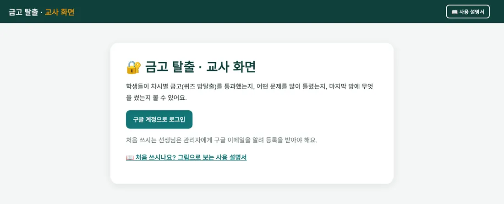
- 교사 화면 주소(…/game/teacher.html)를 엽니다. 수업 키트 홈 위쪽 교사 화면 버튼으로도 들어올 수 있어요.
- 구글 계정으로 로그인을 누르고 학교에서 쓰는 구글 계정을 고릅니다.
- 아래처럼 "아직 등록되지 않은 선생님이에요"가 나오면, 화면에 보이는 이메일을 이 사이트 관리자 선생님께 알려 주세요. 관리자가 등록하면 이 화면을 새로고침(F5)하면 됩니다.
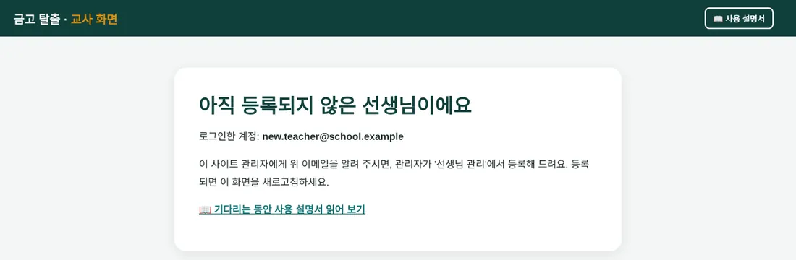
2반 만들기
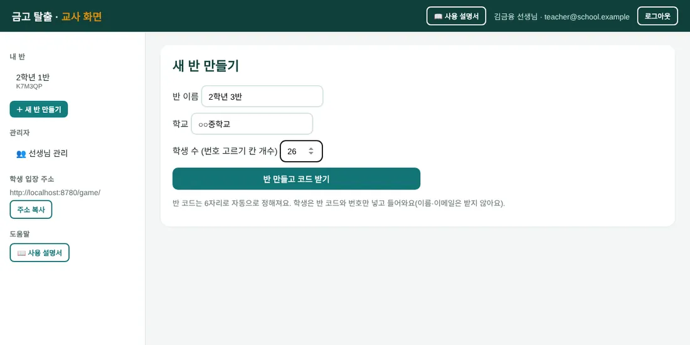
- 반 이름: 예) 2학년 3반. 학생 화면에 그대로 보여요.
- 학교: 처음 등록한 학교 이름이 들어가 있어요. 필요하면 고칩니다.
- 학생 수: 학생이 고를 수 있는 번호 칸의 개수예요. 반 학생 수(마지막 번호)를 넣으세요. 나중에 바꿀 수 있어요(9번).
- 반 만들고 코드 받기를 누르면 6자리 반 코드(예: K7M3QP)가 자동으로 만들어져요.
3교사 화면 둘러보기
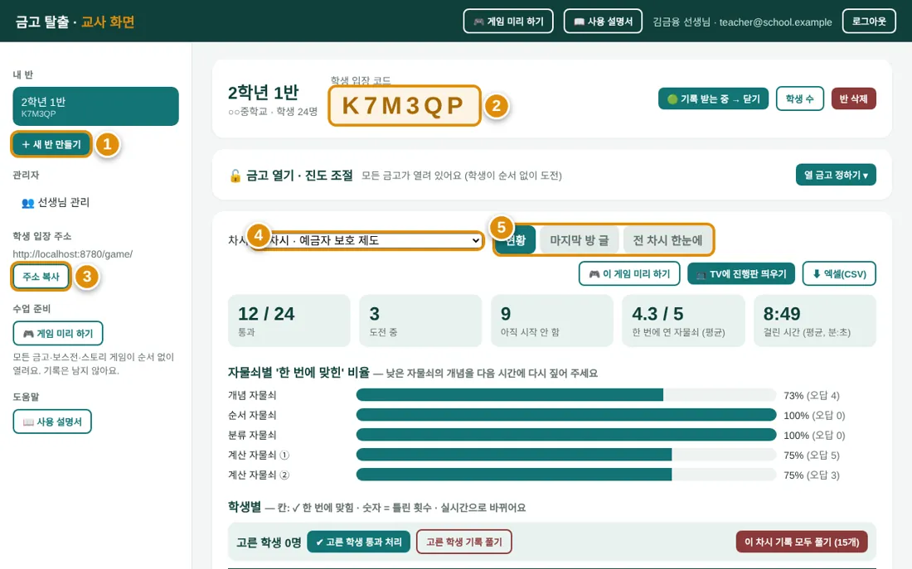
- ＋ 새 반 만들기 — 반을 하나 더 만들 때.
- 학생 입장 코드 — 학생에게 알려 줄 6자리 반 코드. 칠판이나 TV에 크게 띄우세요.
- 주소 복사 — 학생 입장 주소(…/game/)를 복사해요. 구글 클래스룸 과제·공지에 붙이면 편해요.
- 차시 고르기 — 오늘 수업한 차시를 고르세요. 맨 아래에 단원 보스전도 있어요. 마지막으로 고른 차시를 기억해요.
- 탭 — 현황(통과·자물쇠별·학생별) · 마지막 방 글(학생이 쓴 1~2줄) · 전 차시 한눈에(34차시 통과 표).
4학생에게 안내하기
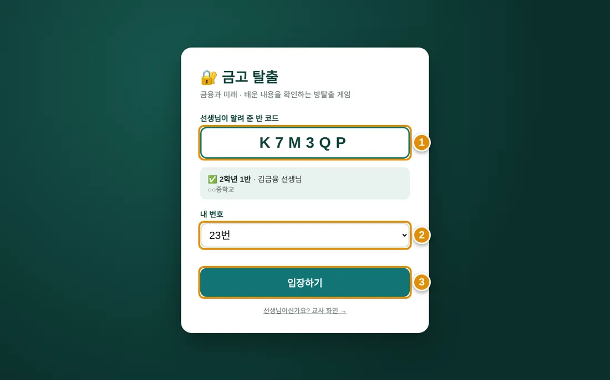
- 학생이 크롬북으로 …/game/을 엽니다. (클래스룸에 주소를 붙여 두면 편해요.)
- 반 코드 6자리를 넣으면 반 이름과 선생님 이름이 확인돼요.
- 내 번호를 고르고 입장하기.
5학생 화면 미리 보기
미리 보기에서는 기록이 남지 않고, 틀렸을 때 잠김도 3초로 짧아요. 윗줄 주황 표시 '교사 미리 보기'가 보이면 미리 보기 중이에요. 끝내려면 [미리 보기 끝내기]를 누르거나 탭을 닫으세요.
모험 지도
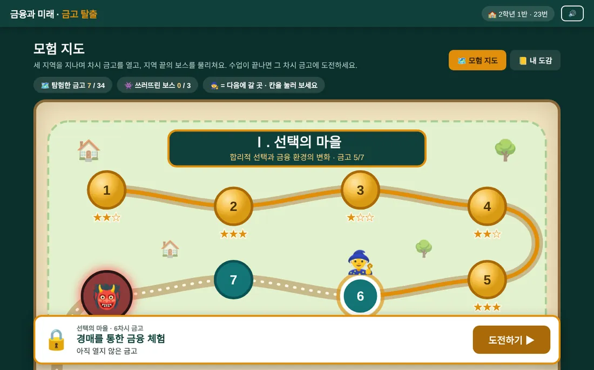
차시 금고: 자물쇠 5개
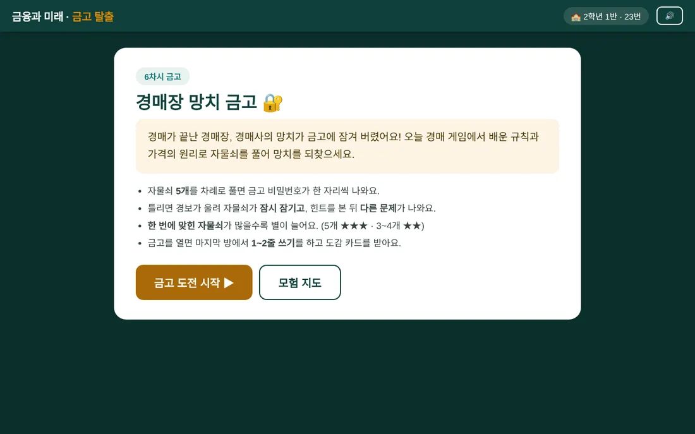
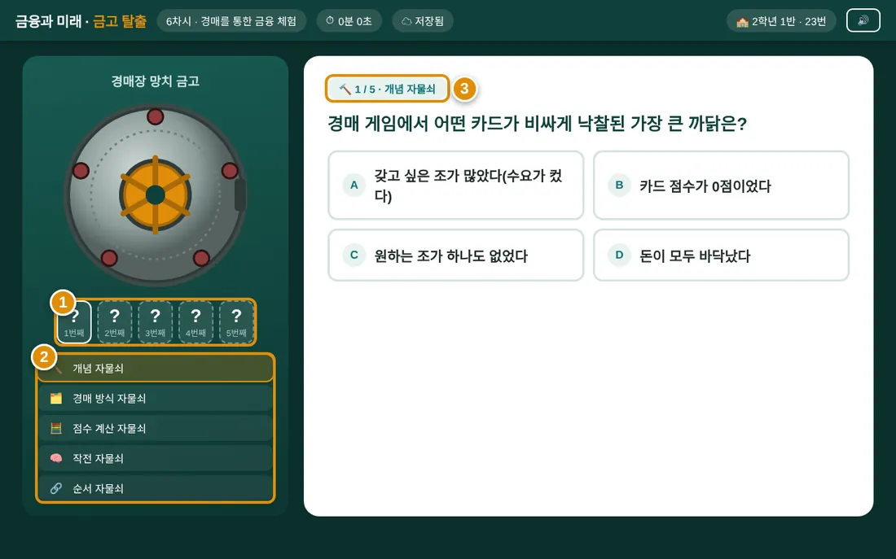
- 문제 형식: 4지선다 · 순서 맞추기 · 분류하기 · 계산하기. 계산 문제는 숫자가 매번 바뀌어요.
- 틀리면 경보가 울리고 자물쇠가 8초(두 번째부터 15초) 잠긴 뒤 힌트를 보여 주고 다른 문제가 나와요. 찍어서는 통과하기 어렵게 만든 장치예요.
- 자물쇠 5개를 열면 모은 숫자로 금고 비밀번호를 넣어요.
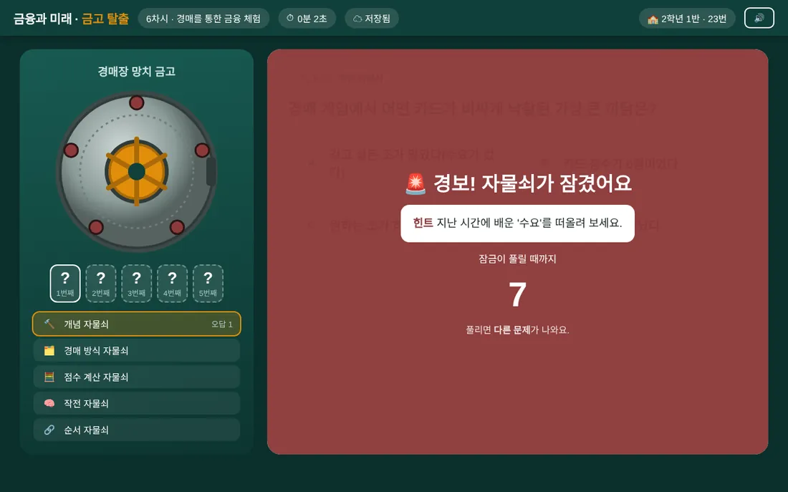
마지막 방: 1~2줄 쓰기 → 도감 카드
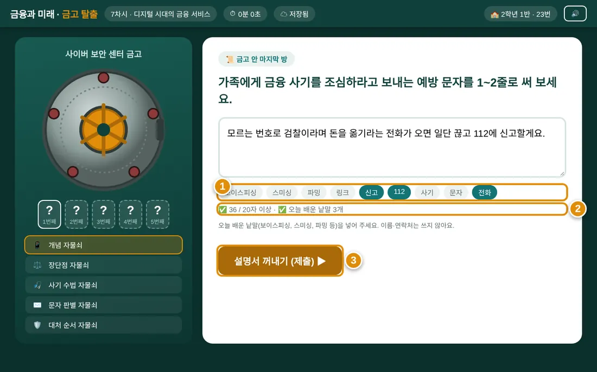
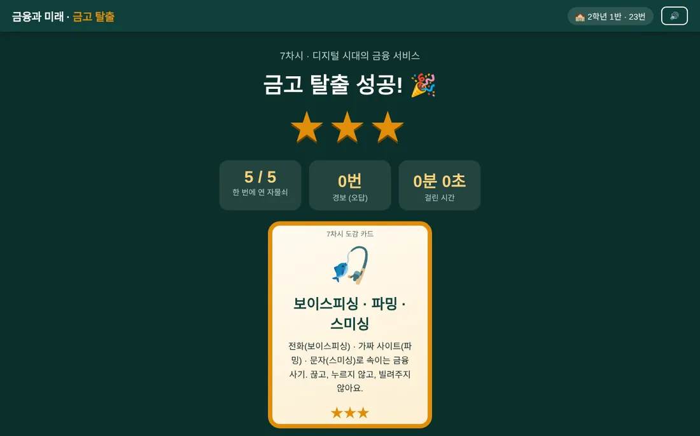
- 마지막 방 글은 20자 이상(띄어쓰기 빼고)이고 오늘 배운 낱말을 1개 이상 넣어야 제출돼요. 학습지 과제 ③(내 생활에 적용)을 대신해요.
| 별 | 기준 (한 번에 연 자물쇠 수) |
|---|---|
| ★★★ | 5개 모두 한 번에 |
| ★★ | 3~4개 |
| ★ | 0~2개 (그래도 통과) |
내 도감
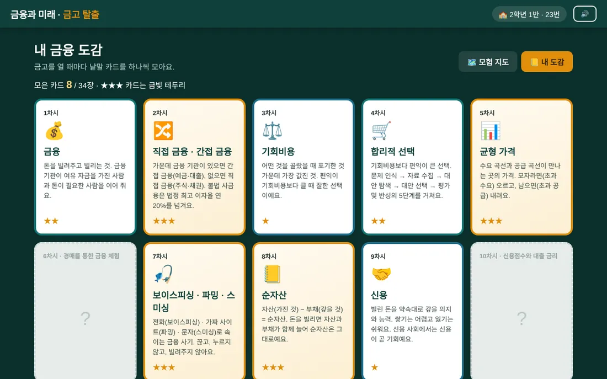
6수업 중: 현황 보기
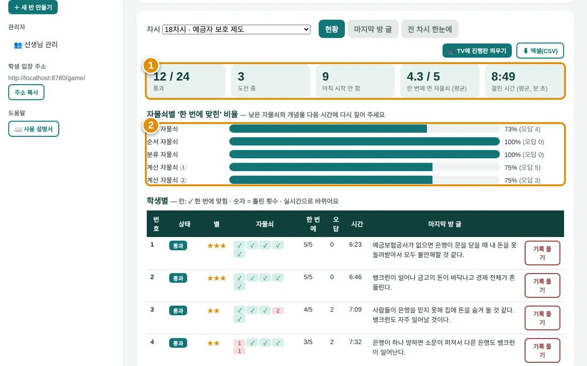
- 요약 — 통과한 학생 수 / 도전 중 / 아직 시작 안 함 / 한 번에 연 자물쇠 평균 / 걸린 시간 평균.
- 자물쇠별 비율 — 각 자물쇠를 한 번에 맞힌 학생의 비율이에요. 60%보다 낮으면 빨간 막대로 보여요. 그 개념을 다음 시간 첫머리에 다시 짚어 주세요.
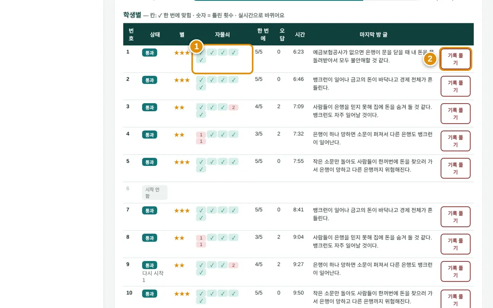
- 자물쇠 칸 — ✓ 한 번에 맞힘, 숫자 틀린 횟수, · 아직 안 함. 옆에 별·한 번에 맞힌 수·오답·시간·마지막 방 글이 나와요. '다시 시작 1'은 중간에 그만뒀다가 다시 시작한 학생이에요.
- 기록 풀기 — 그 번호의 이 차시 기록만 지워요. 학생이 번호를 잘못 골랐거나 크롬북을 바꿔 막혔을 때 씁니다(12번).
- 통과 처리 — 아직 통과하지 못한(또는 시작 안 한) 학생을 선생님이 통과로 표시해요. 종이 학습지로 대신했거나, 결석·기기 문제가 있던 학생에게 쓰세요. 학생 화면에는 통과(별 1개)와 도감 카드가 생기고, 순서대로 모드에서는 다음 금고가 열려요. 표에는 선생님 통과로 보이고, 평균 통계에서는 빠져요. 되돌리려면 기록 풀기.
- 고르기 칸 — 여러 학생을 한꺼번에 고를 때 써요. 맨 위 칸을 누르면 모두 골라요.
- 고른 학생 통과 처리 · 기록 풀기 — 고른 학생들에게 한 번에 적용돼요.
- 이 차시 기록 모두 풀기 — 그 차시(보스전·스토리 포함) 기록을 반 전체 지워요. 문제를 고친 뒤 다시 풀게 하거나 새로 시작할 때 써요. 실수를 막으려고 '모두 풀기'라고 입력해야 지워지고, 되돌릴 수 없어요. 학생 화면 도감에서도 그 카드가 빠져요(지도를 다시 열 때).
7TV 진행판
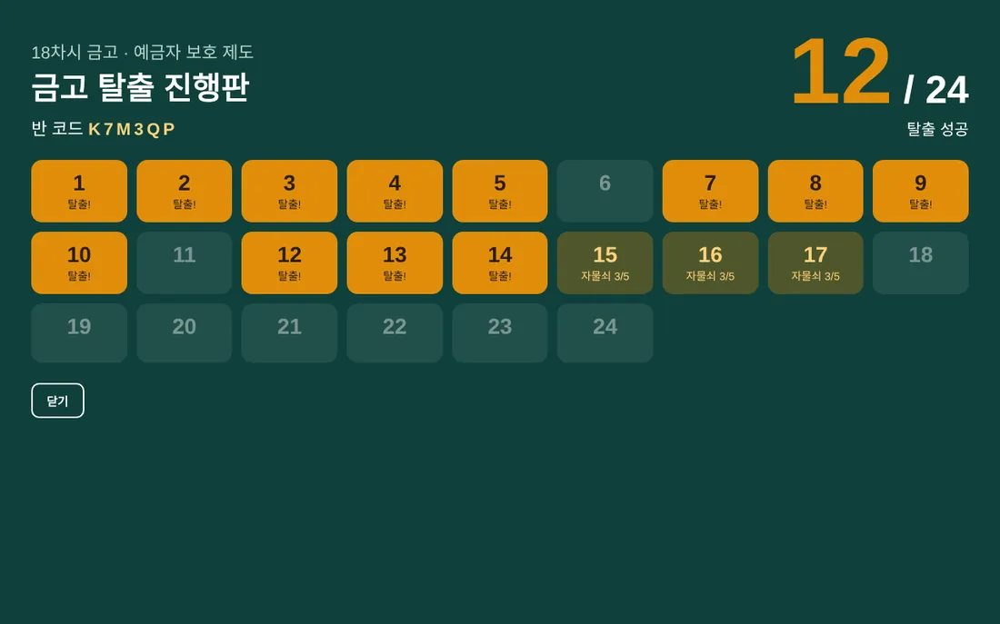
- 📺 TV에 진행판 띄우기를 누르면 전체 화면으로 열려요. 교실 TV에 띄워 두면 학생들이 반 코드를 보고 들어오고, 누가 탈출했는지 함께 볼 수 있어요.
- 별과 오답 수는 보이지 않게 해 두었어요(번호와 진행 상태만). 학생끼리 비교하며 위축되지 않게 하려는 것이에요.
- 닫을 때는 아래 닫기를 누르세요.
8수업 뒤: 글 모아 보기 · 전 차시 · 엑셀
마지막 방 글
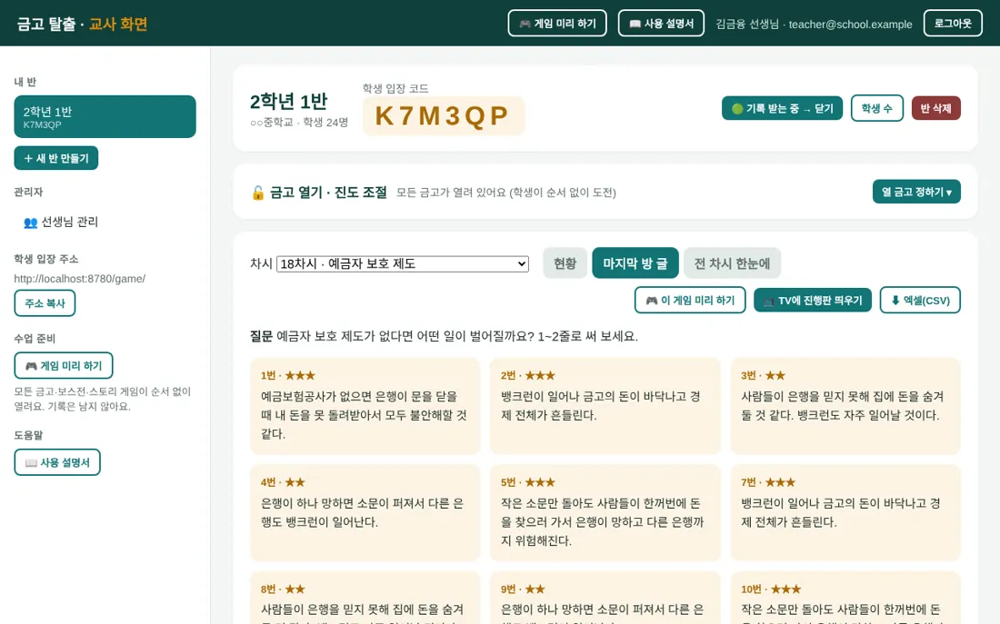
전 차시 한눈에
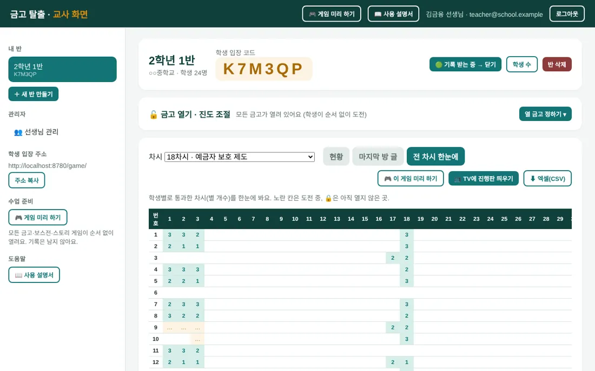
엑셀(CSV)로 내려받기
⬇ 엑셀(CSV)을 누르면 지금 고른 차시의 기록이 파일로 내려받아져요. 반·번호·상태·별·한 번에 맞힌 자물쇠·오답·걸린 시간·자물쇠별 시도·마지막 방 글·통과 시각이 들어 있어요. 엑셀에서 바로 열립니다.
9반 관리 버튼
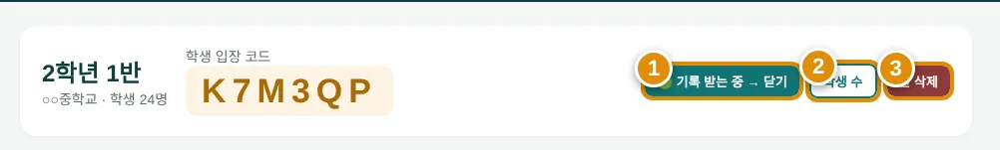
- 🟢 기록 받는 중 → 닫기 — 누르면 🔒 기록 닫힘이 되고, 학생은 금고를 연습으로만 할 수 있어요(기록이 바뀌지 않음). 평가처럼 정해진 시간에만 받고 싶을 때 쓰세요. 다시 누르면 열려요.
- 학생 수 — 번호 칸 개수를 바꿔요(1~60). 전학생이 오면 늘리세요.
- 반 삭제 — 그 반의 모든 기록이 지워지고 되돌릴 수 없어요. 실수를 막으려고 반 코드를 그대로 입력해야 지워져요. 학년이 끝나면 엑셀로 내려받은 뒤 지우세요.
9+금고 열기 · 진도 조절
처음에는 모든 금고가 열려 있어 학생이 순서 없이 아무 금고나 할 수 있어요. 반 이름 아래 🔓 금고 열기 · 진도 조절에서 [열 금고 정하기 ▾]를 누르면 수업 진도에 맞춰 열 곳을 정할 수 있어요. 누르는 즉시 저장되고, 학생 모험 지도에도 바로 반영돼요(새로 고침 필요 없음).
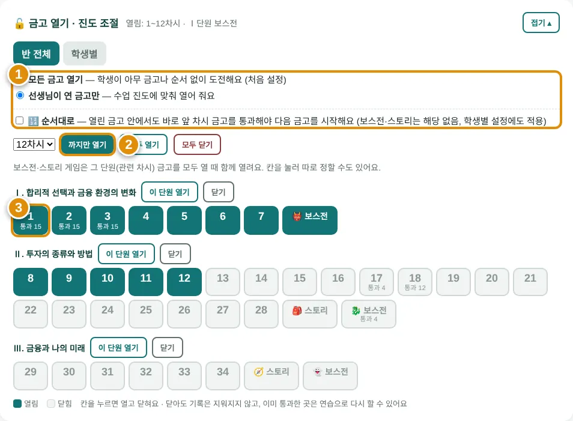
- 방식 — '모든 금고 열기'(처음 설정) 또는 '선생님이 연 금고만'.
- N차시까지만 열기 — 차시를 고르고 누르면 1차시부터 그 차시까지만 열려요. 보스전·스토리 게임은 그 단원(관련 차시) 금고를 모두 열 때 함께 열려요. 단원 이름 옆 [이 단원 열기]·[닫기], [모두 열기]·[모두 닫기]도 있어요.
- 칸 — 누를 때마다 열림(초록)·닫힘(회색)이 바뀌어요. 칸 아래 '통과 15'는 그 금고를 통과한 학생 수예요.
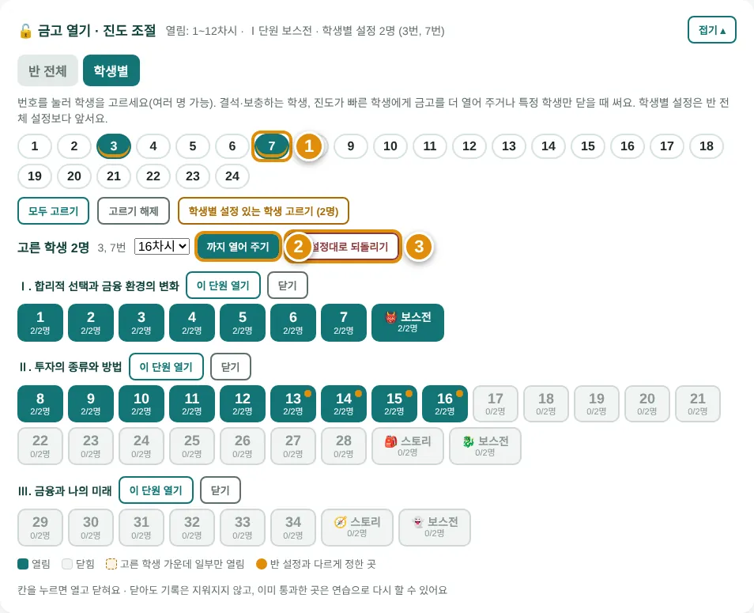
- 번호 고르기 — 결석·보충하는 학생, 진도가 빠른 학생처럼 몇 명만 다르게 하고 싶을 때 써요. 여러 명을 함께 고를 수 있고, 주황 밑줄이 있는 번호는 학생별 설정이 있는 학생이에요.
- N차시까지 열어 주기 — 고른 학생에게만 그 차시까지 더 열어 줘요. 아래 칸을 눌러 한 곳씩 열거나 닫을 수도 있어요(주황 점 = 반 설정과 다르게 정한 곳, 점선 칸 = 고른 학생 가운데 일부만 열림).
- 반 설정대로 되돌리기 — 고른 학생의 학생별 설정을 지워요.
- 금고를 닫아도 기록은 지워지지 않아요. 이미 통과한 금고는 닫혀 있어도 연습으로 다시 할 수 있어요.
- 학생 화면에서 닫힌 금고는 회색 칸에 🔒로 보이고 "선생님이 아직 열지 않은 금고예요"라고 나와요. '전 차시 한눈에' 표에서도 🔒로 보여요.
- 🔢 순서대로(반 전체 탭의 체크 칸) — 열린 금고 안에서도 바로 앞 차시 금고를 통과해야 다음 금고를 시작할 수 있어요. 앞 차시가 그 학생에게 닫혀 있으면 건너뛰어요. 보스전·스토리 게임은 해당 없어요. 막힌 학생은 '통과 처리'(6번)로 풀어 줄 수 있어요.
- 열지 않은 금고와 순서대로 모드는 보안 규칙으로도 막아요. 학생이 주소를 바꾸거나 기기를 조작해도 새로 시작한 기록은 저장되지 않아요. 이미 시작한 금고는 도중에 닫아도 끝까지 저장돼요.
- '기록 닫힘'(9번)은 모든 금고를 연습으로만 하게 하고, 진도 조절은 어느 금고를 할 수 있는지를 정해요. 함께 쓸 수 있어요.
- 교사 미리 보기(🎮)는 진도 조절과 상관없이 모두 열려 있어요.
10단원 보스전
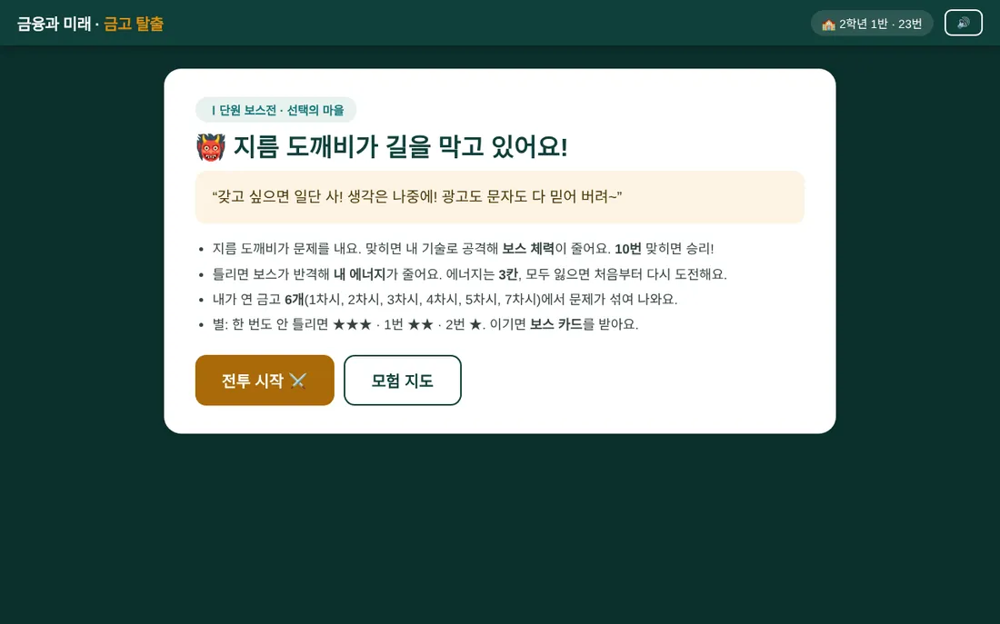
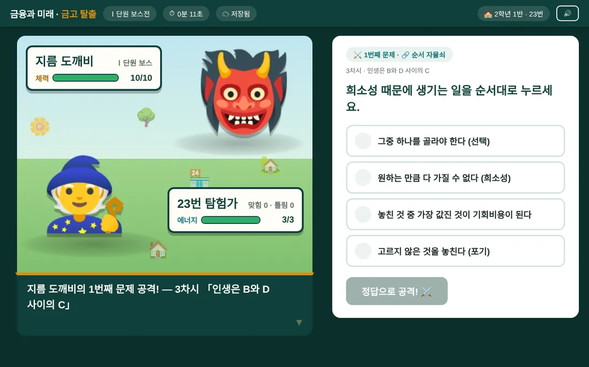
| 보스 | 열리는 조건 | 나오는 문제 |
|---|---|---|
| Ⅰ단원 👹 지름 도깨비 | 1~7차시 금고 4개 이상 통과 | 그 학생이 통과한 금고의 문제를 차시별로 섞어서 |
| Ⅱ단원 🐉 버블 드래곤 | 8~28차시 금고 11개 이상 통과 | |
| Ⅲ단원 👻 될대로 유령 | 29~34차시 금고 3개 이상 통과 |
- 10문제를 맞히면 승리, 틀릴 때마다 에너지 1칸이 줄고 3칸을 모두 잃으면 처음부터 다시 도전해요.
- 별: 이긴 판에서 한 번도 안 틀리면 ★★★, 1번 ★★, 2번 ★. 이기면 보스 카드를 받아요.
- 대사 상자를 누르거나 Space를 누르면 대사가 빨리 넘어가요.
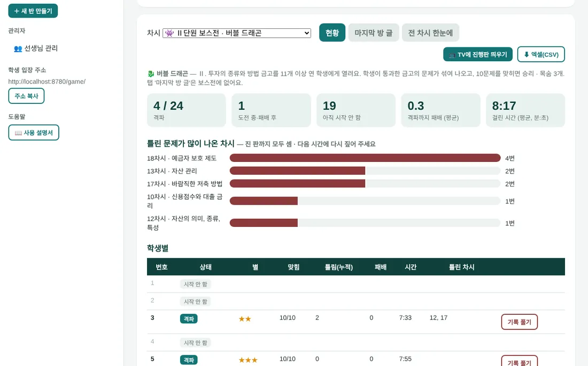
10+스토리 게임 (Ⅱ편「준서의 한 달」 · Ⅲ편「준서의 인생 설계」)
| 편 | 이야기 | 열리는 조건 | 지식 문제 |
|---|---|---|---|
| Ⅱ편 🎒 준서의 한 달 | 중학생 준서가 용돈 10만 원으로 4주 보내기 (지갑·통장·만족·신용) | 16~19차시 금고 2개 이상 | 7개 (2·4·7·14·16·18·19·20차시) |
| Ⅲ편 🧭 준서의 인생 설계 | 어른 준서가 첫 월급(26세)부터 70세까지 생애 주기 여행 (빚·모은 돈·행복·노후 준비) | 29~34차시 금고 3개 이상 | 7개 (29·31·32·33·34차시) |
Ⅱ편은 중학생 준서가 되어 한 달 용돈 10만 원으로 4주를 보내는 이야기예요. 장면마다 고른 선택에 따라 지갑 · 통장 · 만족 · 신용이 바뀌고, 중간중간 나오는 지식 문제 7개(통장 개설·예금·대리입금·과장 광고·투기·예금자 보호 등)를 풀어요. 틀려도 이야기는 이어지고, 그 대신 이야기 속에서 손해와 까닭을 보여 줘요. 약 10분.
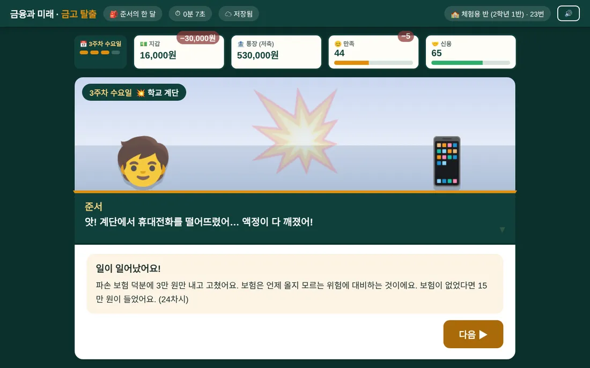
| Ⅱ편 열리는 조건 | Ⅱ편 엔딩 (5가지) | 별 (두 편 같음) |
|---|---|---|
| 16~19차시 금고 가운데 2개 이상 통과 (모험 지도 Ⅱ지역의 파란 🎒 칸) | 🏆 균형 잡힌 금융 탐험가 · 🙂 알뜰한 소비자 · 😮💨 지친 저축왕 · 🌧️ 흔들린 저축 · 🤝 신용 회복 중 | 지식 문제 7개 모두 정답 ★★★ 2개까지 틀림 ★★ · 그 밖 ★ |
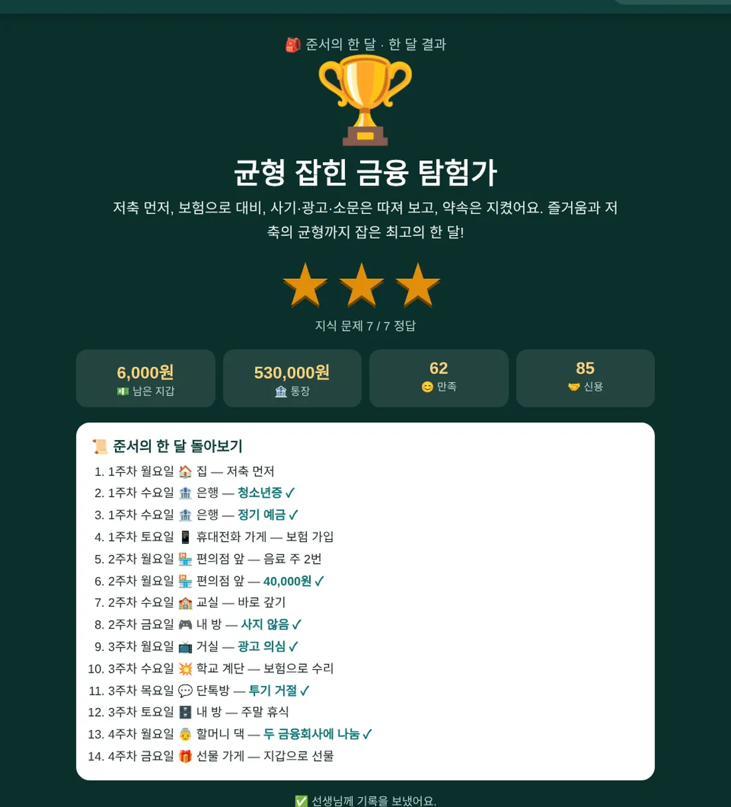
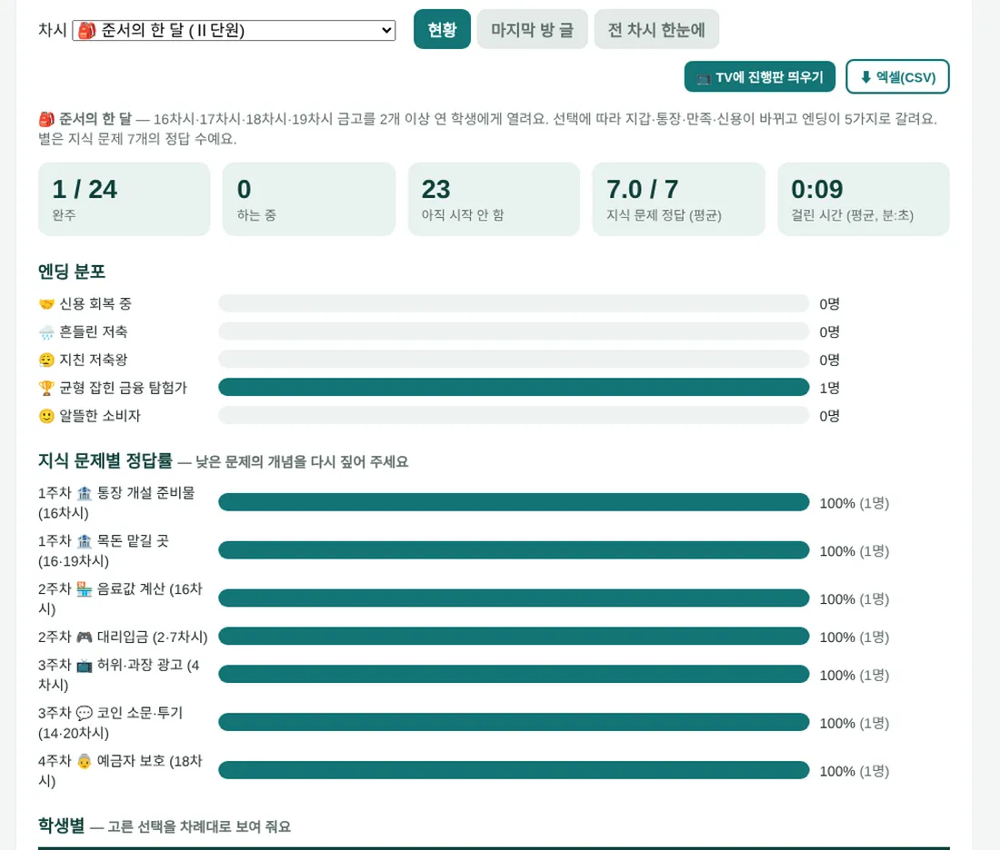
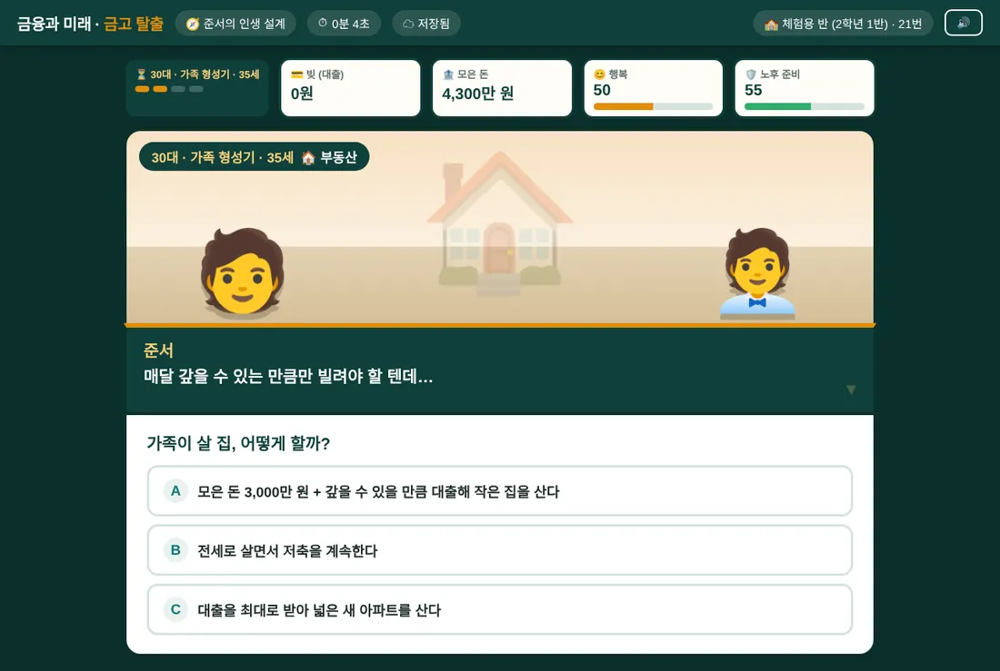
Ⅲ편 엔딩: 🏝️ 여유로운 은퇴 설계자 · 🙂 든든한 보통의 노후 · 😮💨 일만 한 인생 · 🌧️ 준비 못 한 노후 · 💳 빚 갚는 노후
- 처음 끝낸 판만 기록돼요. 다시 하면 연습이라 기록은 바뀌지 않으니, 다른 선택으로 다른 엔딩을 찾아보게 해 주세요.
- 엑셀(CSV)에 엔딩과 고른 선택이 함께 들어가요.
11관리자: 선생님 등록하기
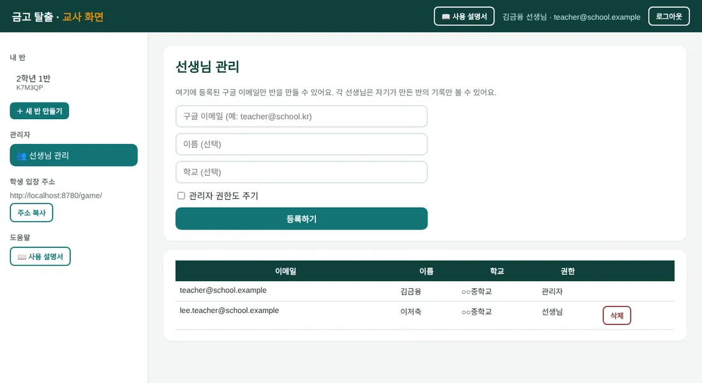
- 등록할 선생님의 구글 이메일을 넣어요(그 선생님이 로그인했을 때 화면에 보인 이메일).
- 이름·학교는 선택. 다른 선생님을 관리자로 만들 때만 관리자 권한도 주기를 체크하세요.
- 등록하기 → 그 선생님이 교사 화면을 새로고침하면 바로 반을 만들 수 있어요.
12이럴 땐 이렇게 (자주 묻는 질문)
학생 화면에 "이 번호는 다른 기기에서 이미 시작했어요"가 나와요.
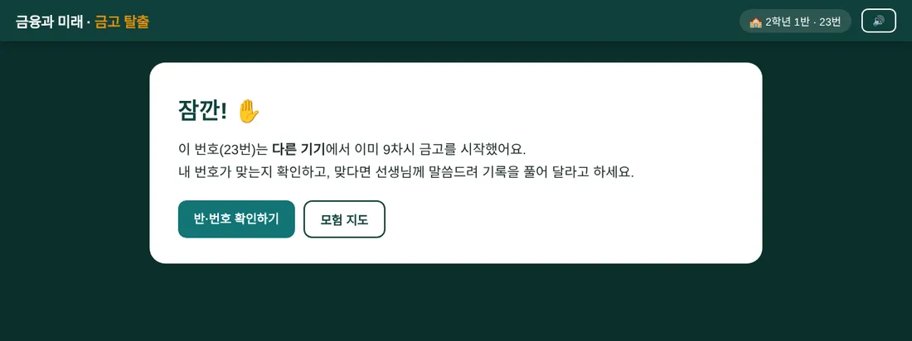
같은 번호를 다른 크롬북(또는 다른 브라우저·시크릿 창)에서 먼저 시작한 경우예요. ① 학생이 번호를 잘못 고른 게 아닌지 확인하고 ② 맞다면 교사 화면 → 그 차시 → 현황 → 그 번호의 기록 풀기를 누르세요. 학생이 새로고침하면 처음부터 다시 할 수 있어요.
학생이 다른 친구 번호를 골라서 시작했어요.
잘못 고른 번호의 그 차시 기록을 기록 풀기로 지운 뒤, 학생 화면 아래 반·번호 바꾸기에서 자기 번호를 다시 고르게 하세요.
크롬북을 바꿨더니 도감이 비어 있어요.
기록은 교사 화면에 그대로 남아 있어요. 다만 새 크롬북에서는 '새 학생'으로 보여 예전 차시 금고를 열면 다른 기기 안내가 나올 수 있어요. 필요한 차시만 기록 풀기를 해 주세요. 같은 크롬북·같은 계정으로 들어오면 그대로 이어집니다.
인터넷이 끊겼어요. 기록이 날아가나요?
금고는 그대로 풀 수 있고, 화면 위에 '저장 대기'가 보여요. 다시 연결되면 자동으로 보내요. 통과 화면에 "⚠ 아직 보내지 못했어요"가 보이면 그 화면을 닫지 말고 연결을 확인하게 하세요.
중간에 창을 닫았어요.
다시 들어오면 처음부터 시작해요. 이미 틀렸던 자물쇠는 '한 번에 맞힘'으로 바뀌지 않아(별 계산에 반영) 기록이 공정하게 남아요. 교사 화면에는 '다시 시작 1'처럼 보여요.
시험처럼 정해진 시간에만 기록을 받고 싶어요.
평소에는 기록 닫힘으로 두고(9번), 그 시간에만 기록 받는 중으로 바꾸세요. 닫혀 있는 동안 학생은 연습만 할 수 있어요.
학습지(워드·PDF 제출)도 같이 쓸 수 있나요?
네. 수업 키트 홈의 [학습지]는 그대로 있어요. 금고 탈출은 짧게 확인하고, 학습지는 깊이 생각할 활동이 필요한 차시에 골라 쓰셔도 됩니다.
종이 학습지로 대신했거나 결석한 학생도 통과로 해 주고 싶어요.
교사 화면 → 그 차시 → 현황 → 그 번호의 통과 처리를 누르세요. 여러 명이면 왼쪽 칸에서 고른 뒤 [✔ 고른 학생 통과 처리]. 별 1개로 기록되고, 순서대로 모드에서는 다음 금고가 열려요(6번).
순서대로 모드인데 학생이 다음 금고를 못 열어요.
바로 앞 차시 금고를 통과해야 열려요. 학생 지도에서 그 칸을 누르면 "앞 금고(N차시)를 먼저 열어야 해요"가 보여요. 앞 금고를 풀게 하거나, 사정이 있으면 앞 차시를 통과 처리해 주세요.
문제를 고쳤어요. 반 전체가 그 차시를 다시 풀게 하고 싶어요.
그 차시 현황에서 이 차시 기록 모두 풀기를 누르고 '모두 풀기'라고 입력하세요. 기록이 지워져 학생들이 처음부터 다시 도전해요. 먼저 엑셀(CSV)로 내려받아 두면 예전 기록을 남길 수 있어요.
문제가 틀렸거나 고치고 싶어요.
차시·자물쇠 이름과 고칠 내용을 관리자에게 알려 주세요. 문제는 차시마다 파일 하나(game/data/chNN.js)에 들어 있어 그 부분만 고치면 바로 반영돼요.
13학생 정보와 기록
| 받는 것 | 반 코드, 번호, 자물쇠별 시도 횟수, 걸린 시간, 마지막 방 1~2줄 글, 보스전에서 틀린 문제의 차시 번호 |
|---|---|
| 받지 않는 것 | 이름, 이메일, 학번, 연락처. 학생은 익명으로 접속해 구글 계정 정보가 남지 않아요. |
| 볼 수 있는 사람 | 그 반을 만든 선생님만 (보안 규칙으로 막혀 있음). 학생은 자기 기록만 볼 수 있어요. |
| 지우는 방법 | 한 번호·한 차시: 기록 풀기 / 반 전체: 반 삭제 (학년 말) |
이 설명서의 그림은 체험용 예시 학급으로 찍은 화면이에요. 화면 모습은 조금씩 바뀔 수 있어요.